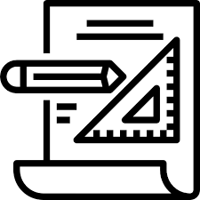

Clique aqui
PROJETO UM
Cardápio fictício: criado como parte de estudo no projeto Elas Na Tech. Página em HTML simples com estilização em CSS simples.
Clique aqui

PROJETO DOIS
Jogo da Velha: criado como parte de estudo do curso HTML5, CSS3, JS+Bootstrap 3 e JQuery, também dentro do projeto Elas Na Tech.
Clique aqui

PROJETO TRÊS
Game Ocean: criado na plataforma StudioCode, é um app game desenvolvido em JavaScript, com objetivo de conscientização sobre o lixo encontrado nos oceanos.
Clique aqui